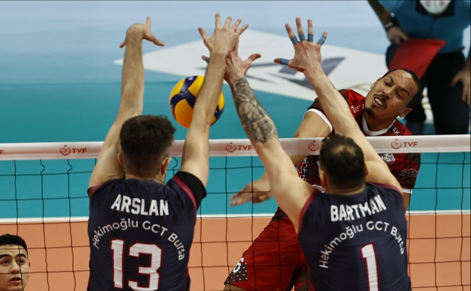

Her set kaç sayı?
Voleybolda 5 set vardır. 5 set üzerinden 3 set kazanıldığında maç bitmiş olur. Voleybolda her set 25 sayı üzerinden oynanır. 25 sayıya en az 2 farkla ilk ulaşan takım seti kazanmış olur. 25 sayısına en az 2 sayı fark ile gelinmez ise fark 2 olana kadar set uzar.